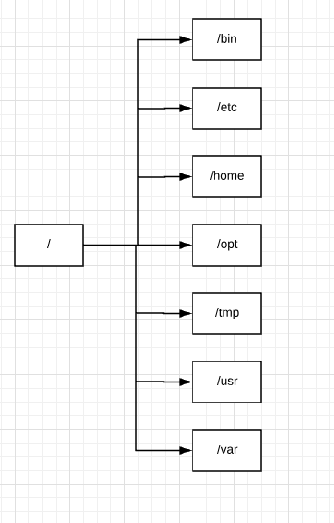

/ - Root - top of the file system hierarchy
/bin - binary files
/etc - system configuration files
/home - user home directory
/opt - optional or third party software
/tmp - temporary space. It will clear while rebooting.
/usr - user related program
/var - variable data.. Log files.
/dev - device files.
/boot - boot the operating system related files
